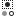
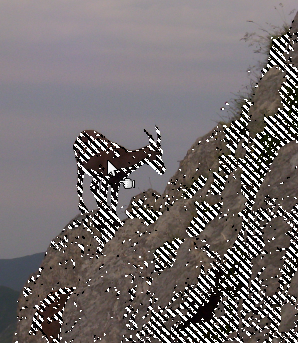

A ferramenta de seleção por Cor é usada para selecionar áreas de uma imagem com base na semelhança de cores. Ele funciona de forma muito parecida com a ferramenta de Seleção Contígua (“Varinha Mágica”). A principal diferença entre elas é que a Varinha Mágica seleciona regiões contíguas, com todas as partes ligadas ao ponto de partida por caminhos que não contenham grandes lacunas; enquanto a ferramenta Seleção por Cor seleciona todos os pixels que são suficientemente similares em cor ao pixel que você clica, independentemente de onde eles estão localizados.
There are different possibilities to activate the tool:
-
Do barra de menu da janela de imagem em → → ,
-
Ao clicar no ícone da ferramenta:

na caixa de ferramentas, -
usando o atalho de teclado Shift +O.
A escolha da ferramenta de selecionar por cor não tem nenhum modificador de teclas especiais, apenas os que afetam todas as ferramentas de seleção da mesma forma. Veja Ferramentas de seleção para obter ajuda.
Figura 14.23. Usando a ferramenta de Seleção por Cor: pixels selecionados não são apenas os contíguos

Tal como acontece com a ferramenta de Seleção Contígua, a seleção começa assim que você clicar e a referência é o primeiro pixel clicado. Se você clicar e arrastar, você pode alterar o limite da mesma forma.
You can move the selection outline with the arrow keys, not with the mouse.
Normally, tool options are displayed in a window attached under the Toolbox as soon as you activate a tool. If they are not, you can access them from the main menu through → → which opens the option window of the selected tool. The available tool options can also be accessed by double clicking the corresponding tool icon in the Toolbox.
- Modo, Anti-serrilhamento, Enevoar bordas
-
![[Nota]](images/note.png)
Nota Veja Ferramentas de Seleção para obter ajuda com opções que são comuns a todas essas ferramentas. Apenas as opções que são específicas para esta ferramenta são explicadas aqui.
- Seleciona áreas transparentes, Usar amostra combinada, Limiar, Selecionar por, Draw mask
-
Todas essas opções funcionam exatamente da mesma maneira, elas foram descritas para a ferramenta de Seleção Contígua. Veja Seção 2.6.4, “Opções” para mais detalhes.